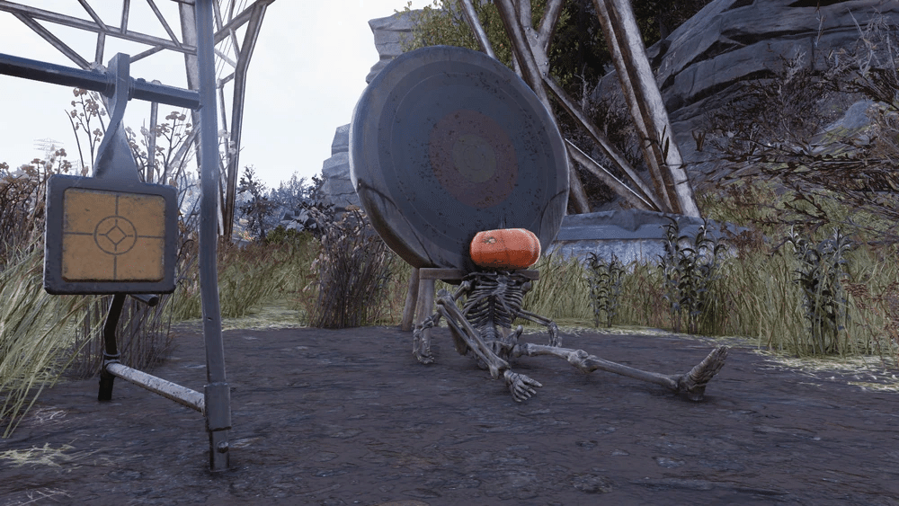

アーチェリー・セット
DATE: 2025/12/18
アーチェリー・セットは、アパラチアの森林地域にあるマップに表示されないロケーションです。
レイアウト

この場所は、送電塔の下にあり、アーチェリーの用具と的が設置されています。
それらの的の一つにもたれかかるように、頭の代わりにカボチャが置かれた白骨死体があります。
送電塔とその北隣の送電塔の間には、小さな放射能の亀裂があります。
東側、崖のすぐ下には鉛の鉱床があります。
さらに南東側の斜面を上った崖のすぐ下には、デスクローの住処があります。
このデスクローは、クエスト「Flavors of Mayhem」のターゲットとしてマークされることがあります。
感想
どう見ても見た目がピカチュウの的がありますね…w
こういう名前の無いロケーションが76には沢山あって見つけた時に嬉しくなります。
これからも名前の無いロケーションも紹介しますね。
どう見ても見た目がピカチュウの的がありますね…w
こういう名前の無いロケーションが76には沢山あって見つけた時に嬉しくなります。
これからも名前の無いロケーションも紹介しますね。
This article uses material from the “Endor” article on the Star Wars wiki at Fandom and is licensed under the Creative Commons Attribution-Share Alike License.